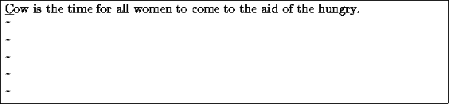
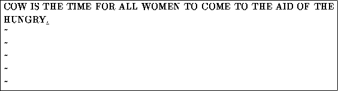

You can replace sections of text using the R command. Place the cursor on the first letter in ``party'', press , and type the word ``hungry''.
Using R to edit text is much like the i and a commands, but R overwrites text, instead of inserting it.
The r command replaces the single character under the cursor. For example, move the cursor to the beginning of the word ``Now'', and type r followed by C, you'll have:

The ``~'' command changes the case of the letter under the cursor from upper- to lower-case, and vise versa, For example, if you place the cursor on the ``o'' in ``Cow'', above, and repeatedly press , you'll end up with:
